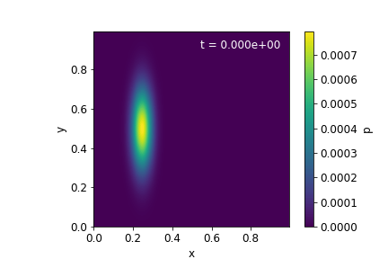
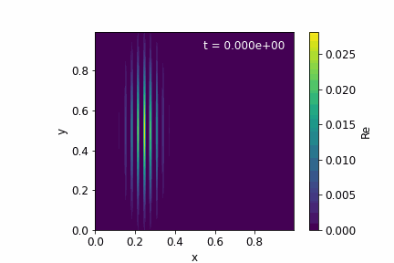
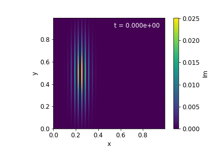

Course project · 15 December 2021
Application of Schrödinger’s equation in a box using a single, double and triple slit configuration
Abstract. In this report we have simulated a double slit configuration in a box using Schrödinger’s equation, specifically, we have looked at the time evolution of the probability of detecting a particle at a certain position $(x, y)$. In order to do that, we have used a Gaussian wave function for the initial state of the particle. For the already mentioned configuration, we have studied as well the detection probability when spanning the entire $y$ axis at a certain $x$ position at a given time. This has also been done for the single and triple slit configurations. We have been able to see the expected diffraction, explained by Huygens’ principle, as well as the precision of the Crank-Nicolson method.
I. Introduction
The double-slit experiment demonstrates that light and matter can display characteristics of both classically defined waves and particles. It also displays the fundamental probabilistic nature of quantum mechanical phenomena [1].
We will simulate the two-dimensional time-dependent (2 space dimensions and 1 time dimension) Schrödinger’s equation (Equation 1), and use it to study a double-slit in a box experiment and some variations of it, as the single and triple slit configurations. The main purpose of this report is to solve this differential equation using an approximation method. In order to study the effectiveness of the approach used, we will study the deviation of the total probability from one (the exact total probability) and the evolution of the detection probability with time. This last section will also allow us to picture how non-relativistic particles interact with a determined $n$-slit configuration.
In section II we describe the mathematical background for our system and we formulate a concrete algorithm, the Crank-Nicolson algorithm (described in Algorithm 1), which can be implemented in any programming language1 to pursue our main objectives: study the effectiveness of this approach to illustrate how photons behave at a double-slit-in-a-box setup and variations thereof. In section III we present and discuss in detail the obtained results related to single, double and triple slit configurations. For a double-slit configuration, we show the time evolution of the 2D probability function which denotes the probability density for detecting the particle at a certain position at different times; and the detection probability spanning the entire $y$ axis at a certain position in the $x$ axis at a certain time. We also show this last detection probability for single and triple slit configurations. Finally, in section IV we provide a short summary and outlook of all of our work.
II. Methods
Background
As we have already said in section I, we will start by introducing the mathematical and physical background at which our system is subjected.
The general formulation of the time-dependent Schrödinger’s equation is
where $\hat{H}$ is some Hamiltonian operator and $|\Psi\rangle$ is a quantum state. The quantum state is related to probability through the Born rule. The Born rule is a postulate which states that the probability density of finding a particle at a given point, when measured at time $t$, is proportional to the product of the wave function and its conjugate at that point.
In the case of a single, non-relativistic particle in two dimensions, if we work in “position space”, the quantum state $|\Psi\rangle$ can then be expressed as a complex valued function $\Psi(x, y, t)$, i.e. the wave function. Schrödinger’s equation then becomes
where the terms $-\frac{\hbar^2}{2m}\frac{\partial^2\Psi}{\partial x^2}$ and $-\frac{\hbar^2}{2m}\frac{\partial^2\Psi}{\partial y^2}$ are expressions of the kinetic energy, corresponding to $p^2/2m$ from classical physics, with $m$ being the particle mass. The external environment is encoded in the potential $V$. We will only consider the case of a time-independent potential, i.e. $V = V(x, y)$.
In this position space the Born rule takes the form
where $p(x,y\,;t)$ denotes the probability density for detecting the particle at position $(x,y)$ if we perform a position measurement at time $t$.
If all dimensionful variables are scaled away, i.e. all the variables are dimensionless, Schrödinger’s equation can be rewritten in the following form:
In our new notation the Born rule takes the form
assuming the wave function $u(x,y,t)$ has been properly normalized.
In order to set up our wave equation, we have assumed Dirichlet boundary conditions in the XY plane: $u(x=0,y,t)=0$, $u(x=1,y,t)=0$, $u(x,y=0,t)=0$, $u(x,y=1,t)=0$.
For the initial wave function $u(x,y,t=0)$ we will use a quantum mechanical Gaussian wave packet. An unnormalised Gaussian wave packet can be represented with the following expression
where $x_c$ and $y_c$ are the coordinates of the centre of the initial wave packet; $\sigma_x$ and $\sigma_y$ are the initial widths of the wave packet in the $x$ and $y$ directions, and $p_x$ and $p_y$ are the wave packet momenta. The initial state satisfies the boundary conditions and has been normalised such that $\sum_{i,j} u^{0*}_{ij}u^0_{ij}=1$, i.e. that the total probability in our 2D probability function $p^n_{ij}=u^{n*}_{ij}u^n_{ij}$ starts out normalized to 1.
The algorithm
The Crank-Nicolson method is a finite difference method used for numerically solving partial differential equations (PDEs). The approximation of derivatives by finite differences is quite important when obtaining the numerical solution of differential equations, especially boundary value problems. The forward difference scheme approximates $\partial u/\partial t$ by the finite difference $(u^{n+1}_i - u^n_i)/\Delta t$ while the backward difference scheme approximates $\partial u/\partial t$ by $(u^n_i - u^{n-1}_i)/\Delta t$. The linear combination of these two schemes with $\theta=1/2$ gives the Crank-Nicolson scheme in time [2].
Applying the Crank-Nicolson approach to Equation 4 and discretizing (see Appendix, section V), we obtain:
where $A$ and $B$ are complex sparse matrices of size $(M-2)^2\times(M-2)^2$ with diagonal entries $a_k=1+4r+\frac{i\Delta t}{2}V_{ij}$ and $b_k=1-4r-\frac{i\Delta t}{2}V_{ij}$ respectively, and off-diagonal entries $\mp r$, where $r\equiv i\Delta t/(2h^2)$. There are various approaches to solve Equation 7, for instance the Jacobi method, the Gauss-Seidel and the Successive over-relaxation (SOR) method. Both Jacobi and Gauss-Seidel always converge if the matrix is diagonally dominant, which is our case. In our program we have simply used the already implemented command spsolve.
Algorithm 1 — Crank-Nicolson
$(u^{n+1}_i - u^n_i)/\Delta t = i\,(F^{n+1}_i - F^n_i)/2$ — Do the discretization with the Crank-Nicolson approach.
$A\vec{u}^{n+1} = B\vec{u}^n$ — Get matrix equation.
$\vec{b} = B\vec{u}^n$, $A\vec{u}^{n+1} = \vec{b}$ — Solve the matrix equation.
III. Results and Discussion
The total probability in our 2D probability function $p^n_{ij}=u^{n*}_{ij}u^n_{ij}$ should be conserved over time. We have tested this by running two simulations of the double-slit-in-a-box setup for the cases without and with a double-slit barrier. The simulation parameters are: $h=0.005$, $\Delta t=2.5\times10^{-5}$, $T=0.008$, $x_c=0.25$, $\sigma_x=0.05$, $p_x=200$, $y_c=0.5$, $p_y=0$. For the case without a slit $\sigma_y=0.05$ and $V_0=0$, whereas for the case with a double slit $\sigma_y=0.10$ and $V_0=1\cdot10^{10}$. The double-slit configuration consists of a wall of thickness 0.02, centred at $x=0.5$, with slit separation 0.05 and slit aperture 0.05.
In Figure 1, it can be seen as a function of time the deviation of the total probability for both simulations. For the case without a slit, it could be said that the total probability does not deviate from the exact one whereas in the case with a double slit it deviates a little from one. In theory the total probability should be one, and should be conserved over time, but, in our case, the deviation is due to lack of precision in the method used to approximate the result of the Equation 1. In the case of no slit, i.e. the potential is 0, there is a term less in the equation and therefore less error, which matches with what is observed in Figure 1. (Figure 1: deviation of the total probability from 1 — see PDF.)
We have used the double-slit configuration to plot colourmaps which illustrate the time evolution of the 2D probability function $p^n_{ij}$ at times $t=0$, $t=0.001$ and $t=0.002$ respectively (Figure 2). In the first plot, the 2D probability shows the particle has not gone through the slits yet, centered at $x=x_c$ and $y=y_c$. In the second one, the particle is going through the slit, and a phenomenon of diffraction happens — every point on a propagating wavefront becomes the source of a secondary spherical wave (Huygens’ principle). In the third plot, these “secondary waves” form a new wavefront at a later time, and the reflected wave is the result from the sum of the reflection at the wall and the leftward-propagating part of the diffracted wave.

For the same time steps we have also plotted colourmaps that show $\mathrm{Re}(u_{ij})$ and $\mathrm{Im}(u_{ij})$ (Figures 3 and 4). With these plots we can see in a more clear way how the wavefronts behave. In the plots for $t=0$, plane wavefronts are traveling towards the double slit wall. At $t=0.001$, the part of these wavefronts which collides with the wall reverses direction, while the segment which “collides” with the slits suffers diffraction forming spherical wavefronts. At $t=0.002$, the reflected plane waves interfere with the spherical waves from the slits. We have separated the real and the imaginary parts because it is difficult to plot and interpret them together, but we can see that they behave in more or less the same way.


For a single, double and triple slit configuration we have shown the detection probability spanning the entire $y$ axis at $x=0.8$ at time $t=0.002$ (Figure 5). The effect of having more slits implicates that the probability of finding the particle at some position $y$ is essentially zero except in distinct points. It can be observed as well that, as more slits are introduced in the configuration, more peaks of bigger amplitude appear. The position of the peaks will depend on the slit separation and aperture and on the wavelength. In this case, it is really useful to compare that figure (Figure 5) to the one representing the intensity at Thomas Young’s double-slit experiment. In fact, the probability is proportional to the square modulus of the amplitude of the wave, i.e. $|u|^2$, and the intensity is proportional to the square modulus of the electric field (also represented by a wave). Thus, we can say that a correspondence between the classical intensity and the quantum probability exists.
IV. Conclusion
In this report, the passages of a non-relativistic particle through a single, double and triple slit configuration in a box have been simulated. We have done this in order to study the effectiveness of approximating the solution to a version (all dimensionful variables scaled away, time-independent potential) of the Schrödinger equation (Equation 2) using the Crank-Nicolson algorithm. In addition to that goal, we wanted to observe as well the time evolution of the probability of detecting a particle at a certain position $(x,y)$.
Firstly, we have simulated two cases, one without a slit and another one with a double-slit configuration (Figure 1). It has been observed the deviation of the total probability of detecting the particle for both simulations, being the reason for that deviation the lack of precision in the Crank-Nicolson method to approximate Equation 1. Nevertheless, the value of this deviation is quite small, therefore we can affirm that the approach used is really useful to get an approximate solution which illustrates the desired phenomenon.
After that, we have studied a double slit configuration (Figure 2). It has been observed how the probability function of detecting the particle at a specific position $(x,y)$ changes as time goes through. For this simulation we have also looked at how the real and imaginary parts of the wave function change with time since in these plots (Figures 3 and 4) it can be seen in a more clear way the behaviour of the wavefronts before, while and after going through the slit. Observing them, one can get a significantly good look at how the expected diffraction and reflection processes take place.
Finally, for the already mentioned configuration and also for one and three slits, it has been studied the detection probability when spanning the entire $y$ axis at a certain $x$ position and time. The diffracted intensity is essentially zero except in the directions where the waves coming out from all the slits add up in phase, and this explains what is observed in Figure 5 since the diffracted intensity is proportional to the probability density.
A possible improvement in the experiment could be to simulate a thinner wall without slits and try to illustrate the tunnel effect, in which a quantum particle “crosses” the potential barrier so, if the wall is thin enough, some significant parts of the probability function might reach the other side of the wall.
Bibliography
- [1] Raymond A. Serway and John W. Jewett Jr. “Physics for Scientist and Engineers with Modern Physics”. In: Cengage learning, 2010. Chap. 40, pp. 1207–1208.
- [2] Hans Petter Langtangen. Finite difference methods for diffusion processes. url: http://hplgit.github.io/INF5620/doc/pub/H14/diffu/html/_main_diffu-solarized001.html. (accessed: 02.12.2021).
1 We have implemented this algorithm in C++ and the plots have been generated with Python. Every program used can be found in our public GitHub repository.